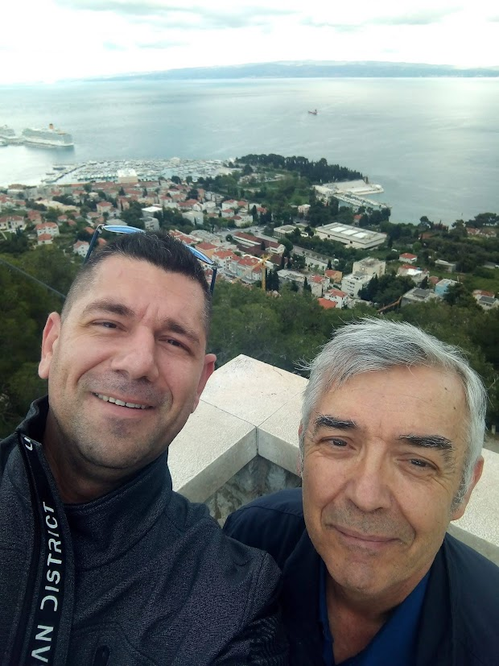
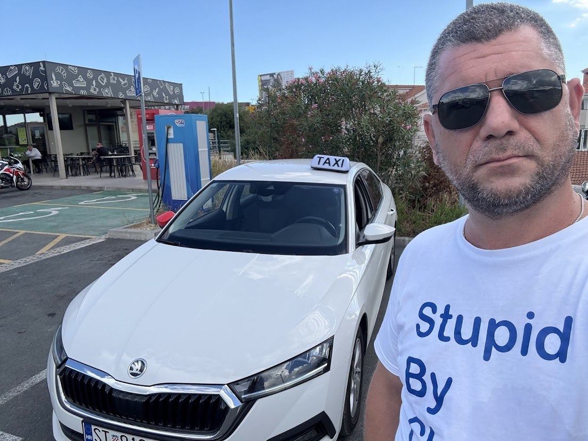

Rođen sam 1985. godine kao najmlađi član šesteročlane obitelji što su je zasnovali Marta i Nikola još davne 1978. godine. Brat sam svoje najdraže sestre Mary te Ante i Tomislava. Osnovnoškolsku naobrazbu stekao sam u Žrnovnici (boravište i prebivalište), a srednju školu pohađao sam u Splitu, zanimanje ekonomist.
(Ne)logičan izbor nakon srednje škole bio je Katolički bogoslovni fakultet u Splitu gdje sam 02. travnja 2009. godine diplomirao s radom iz teologije religija na temu „Budističko poimanje patnje i usporedba s kršćanskim pristupom patnji – doprinos međureligijskom dijalogu“.
Sve se to odvijalo pod budnim okom prof.dr.sc. don Nikole Bižace. Inače, gle slučajnosti (postoje li takve?), 02. travnja je datum kada je par godina ranije k Nebeskom Ocu otišao papa Ivan Pavao II. i njega držim za svog najdražeg sveca mada nikada nisam bio neki klasični katolički obožavatelj papinskih likova. Nikad nisam shvaćao taj hype. No, malo je reći da je Ivan Pavao posebno mjesto u mom življenju i više nego zaslužio. Ali o tome nekom drugom prigodnijom prigodom.

Marjanska šetnja sa mentorom Bižacom.
Ljubav prema evanđeoskim tekstovima rodila se tek na trećoj godini studija kroz pokušaj proboja iz patnje prema svjetlu i smislu života. Krivicu za to snosi mentor na seminarskom radu „Tekst i interpretacija“ prof.dr.sc. fra Ante Vučković i jedna, s njegove strane, u zrak podignuta obična plava kemijska. Inače, popularni splitski franjevac je jedina osoba koja je u posljednjih 20ak godina doživjela moju osobu u svim duhovnim „pozama“ te je time bio posljednji kojeg sam morao „likvidirati“ da bi u slobodi djeteta Božjega pisao o zgodama iz Evanđelja. Vučković je bio eliminiran jedne subotnje večeri, prijelazno (slučajno) na Mali Uskrs dok se pod mojim prstima otipkavao tekst „(Ne)vjerni Toma“. O kojem je (slučajno) govorilo evanđelje prve nedjelje nakon Uskrsa. Na pisanje sam čekao više od mjesec ipo dana. Razlog je bio krajnje jednostavan: nisam znao kako bih naslovio tekst. Adio pameti.
Strast za čitanjem kao takvim došla je još kasnije. Slučajno. Pri pogledu na prvu rečenicu Kunderine „Nepodnošljive lakoće postojanja.“ Tamo stoji zapisano: „Misao o vječnom vraćanju je tajanstvena i Nietzsche je njome prilično zbunio većinu filozofa; pretpostaviti da će se jednom ponoviti sve ono što smo već doživjeli, i još da će se to ponavljanje ponavljati u beskraj! Što treba da nam kaže taj smušeni mit?“ Dogodilo se to u vrijeme kad sam tražio čitalački odmor od literature koju sam trsio kako bih napisao gore spomenuti diplomski rad, pred kraj ljeta 2008. Smatram se kunderofilom, a možda jednog dana budem i cijenjeni kunderolog. Bilo kako bilo, njegov odlazak 11. srpnja 2023. za mene je bio i veliki osobni gubitak.
Duhovno-teološki najviše dugujem upravo spomenutoj dvojici mentora (fra Ante Vučković i don Nikola Bižaca). Ne valja mi negirati ni utjecaj što su ga na mene imali, bez posebnog reda, Hans Küng, Fabrice Hadjadj, Anthony de Mello, Anselm Grün, Ivan od Križa, Thomas Merton te doktor i evanđelist Luka. Naravno, tu je i onaj kojeg nije moguće izbjeći. Onaj za koga Atlas filozofije kaže da nema na koga nije utjecao. Pa tako onda i na mene. On je sv. Toma Akvinski, čovjek koji je umro na dan kad sam se ja rodio (07. ožujka), baš zato da napravi mjesta za mene. Istini za volju, trebalo je proći 711 godina da se pojavi Tomina zamjena, ali to je vrijedilo čekati. To su ljudi od kojih baštinim, na ramenima tih divova stojim kao maleni patuljak i nadam se da ću uspjeti vidjeti barem metar dalje nego što su oni vidjeli dok su išli za tragovima Božjim. A, tko zna, možda netko jednog dana bude držao značajnim uspeti se i na ramena prvog igdje ikada u povijesti ljudske civilizacije, doduše samoprozvanog, inženjera teologije te od ChatGPT-a imenovanog filozofa s asfalta.
Vrijeme provodim, kako i priliči nekome tko okolo hoda u majici sa natpisom „Reading Is My Cardio“, u čitanju i pisanju. Ponekad nađem vremena i odigram na PlayStation: kad igram sam vozim MotoGP 25; u zajedničkim druženjima uz PS izbor pada na NBA gdje se inkarniram u Kobea Bryanta i činim takva čuda pod obručem da oni koji mi se usude suprotstaviti smatraju da se radi o paranormalnim pojavama. Svoje virtualne nogometne vještine brusim protiv mladog Solinjanina koji se ponosno skriva iza imena Antonio Šećer. I ne biva mi slatko. Jer često mi servira gorak okus poraza.
Cijenim dobru papicu, posebno nekakav slatkiš za koji uvijek ima mjesta, a od piva ove redovničke (Paulaner, Franziskaner, Benediktiner i Augustiner).
Vlasnik sam pet tetovaža. Najdraža mi je upravo posljednja koju stavih na sebe: na vanjskoj strani potkoljenice svoje mjesto ima, nažalost pokojni, Kobe Bryant. Fotografija je nastala 24. travnja 2008. god. kad je igrao finale Zapadne konferencije. Kobe nije tu zbog igranja na PlayStationu. U rujnu 2021. godine, kad je već prošlo izvjesno vrijeme od njegove tragične smrti, nas dvojica smo postali intimni prijatelji. U kršćanskom smislu. On mi je drugi najdraži svetac.
Prezirem spavanje. Iz dna duše. Zato sam svako jutro buddhan najkasnije u 3:10 h.
Tomo Akvinac, između ostalog, kaže da stvari koje volimo govore o nama. Mislim da je u pravu. Osobno, osim što su mi drage, volim im davati i imena, nešto poput Adama u rajskom vrtu. Tako sva moja pisanja nadgleda maleni plišani tigar Cody. On mi je glavni suputnik i supatnik dok učim programiranje (HTML, CSS i Javascript) i sanjam biti neki vrhunski IT nešto, ne znam točno što.
Druga stvar(nost) kojoj sam dao ime je bijela Škoda Octavia 2.0 TDI (2021.god.). Krštena je imenom Bella Psina. Ono je kombinacija talijanskog i hrvatskog jezika. Temeljna ideja iza naziva jest činjenica da me Octavia svojim linijama uvelike podsjeća na bijelu morsku psinu i ne događa se rijetko da je, dok stojim negdje i pušim crni Lucky Strike, o kojem sam teški ovisnik, jednostavno promatram i kontempliram njezinu ljepotu pokušavajući osjetiti uzbuđenje i radost onoga tko ju je dizajnirao. Jer imam dojam da je taj netko bio čitavim bićem uronjen u “rađanje” svake skladne linije tog predivnog stroja.

Selfie: Bella Psina & moja malenkost
Zore su mi draže od zalazaka sunca, a sigurno je da bih prije pojeo kokoš nego jaje.
Od sportova obožavam Moto GP i čak ponekad pogledam neku utrku.
Ni kvalitetan film nije na odmet. Najbolji mi je Genijalni um, a daleko najdraži Tigar i Zmaj. Pogledah ga 13 puta i smatram ga jednim od duhovno-teološki najbitnijih filmskih ostvarenja.
O svome glazbenom (ne)ukusu ne bih puno: slušam skoro sve, uzduž i poprijeko. Himna mi je „Vratio sam se živote“ (Kemal Monteno), a od duhovnih „Ja sam ti jedini drug“ (Jasna Zlokić). Posebno mjesto u mom repertoaru unatrag nekih pola godine ima Aleksandra Prijović, a njezina pjesma “Zver” službena je himna Belle Psine. Prijovićka mi je najčešća suvozačica dok uberiram Splitom i okolicom. Ipak, dimenzija za sebe su i uvijek će biti Gibonni, T.B.F. i Đorđe Balašević.
Što se tiče pristupa informacijama o svijetu u kojem živim, mogu reći da „ne čitam novine, ne gledam TV, to me ne zanima, ne nasjedam njihovoj propagandi“ pa mi je jedini doticaj s virtualno-medijskim svijetom Šolina kolumna u nedjeljnoj Slobodnoj Dalmaciji. Ali u posljednje vrijeme čak i Šolu (nenamjerno) izbjegavam.
Od društvenih mreža imam nijednu. Na tu temu nemam ništa posebno za reći, mislim da je Cal Newport sve dobro elaborirao. Možda samo to da mi se čini kako društvene mreže stvaraju nedruštvene ljude? A mi smo ipak sinovi i kćeri Trojice tj. Zajedništva & Osobne Komunikacije. Kao i Nino Raspudić, volim s vremena na vrijeme čitati svoje tekstove. Ali znam da ću jednog dana doći u napast da ih sve spalim. Zato, između ostalog, i ova stranica: da ih spasim od samoga sebe.
Naslonjen na Riječ je, naravno, Ljubljeni učenik, Ivan. U njemu vidim sebe. Ali i sve ljude koje poznajem i susrećem. Na bilo koji način.
Ova internet stranica pokušaj je da se ostane na tim Grudima, da se i dalje osluškuje to Srce prepuno ljubavi za svakog čovjeka. Srce koje kuca na vrata naših srcâ. I koje to ne prestaje činiti. Ujedno, ona, ta naslonjenost, je i upozorenje na trajnu opasnost. Opasnost da se, zbog vlastitih kratkoročnih probitaka i sitnih interesa koji ne vide dalje od prvog zavoja, izda Gospodina i pritom poput Jude pita „Da nisam ja, učitelju?“
Tekstovi koji se nalaze ovdje prije svega su rezultat vlastitih traženja i pitanja. I dobivanja odgovora kroz susrete s Riječju. Oni su uvijek (previše) osobni i samim tim nisu možda objektivno najrelevantniji i teološki najvažniji, ali su za autora bili i više nego plodni i, što je možda još i važnije, životno obvezujući.
Isus iz Nazareta najosebujniji je povijesni lik što ga cjelokupna ljudska civilizacija poznaje.
Tekstovi su pisano svjedočanstvo ishodanog puta od susreta s čovjekom koji je za sobom vodio ne baš homogenu grupu „dvanaest žigosanih“ do darovanog prepoznavanja njegova Gospodstva sažetog u rečenicu koju je kod zdenca čula i Samarijanka: „Ja sam, ja koji s tobom govorim!“
Nazarećanin govori. Rado.
Nazarećanin razgovara. Rado.
Ali Nazarećanin ne brblja.
Ne baca riječi u vjetar.
I iskustvo je potpisnika ovih redaka da Nazarećanin puno radije sluša.
Kako bi rekao pravu riječ.
Jer kad (pro)govori: jasno ti je da Mu je svaka na mjestu.
On je Riječ.
A mi smo Naslonjeni na Riječ.